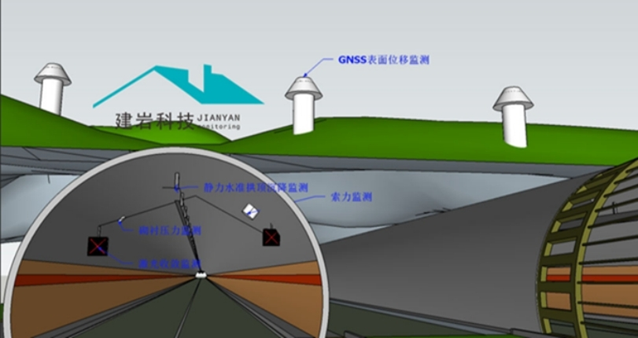

该县域燃气管网总长 320 公里，覆盖城区及 12 个乡镇，管网周边道路施工、农田耕种等作业频繁，每年因第三方施工导致的燃气泄漏事故达 3-4 起。传统电子传感器存在误报率高、定位偏差大、寿命短的问题，无法满足安全防控需求。
沿核心燃气管网路由复用现有通信光缆，布设本项目结构增敏型光纤传感阵列，配套部署分布式光纤传感解调仪，搭载光脉智联 SaaS 平台基础版。实现管网全线第三方施工破坏、管道泄漏的实时监测与分级预警，对接当地燃气公司应急指挥系统。
项目投运以来，成功识别第三方施工振动隐患 17 起，其中违规开挖隐患 9 起，均在施工初期完成精准定位与联动处置，未发生一起燃气泄漏安全事故。管道泄漏识别准确率达 95% 以上，误报率降至 3% 以下，较传统监测手段误报率下降 37 个百分点，大幅降低了燃气公司运维成本与安全风险。